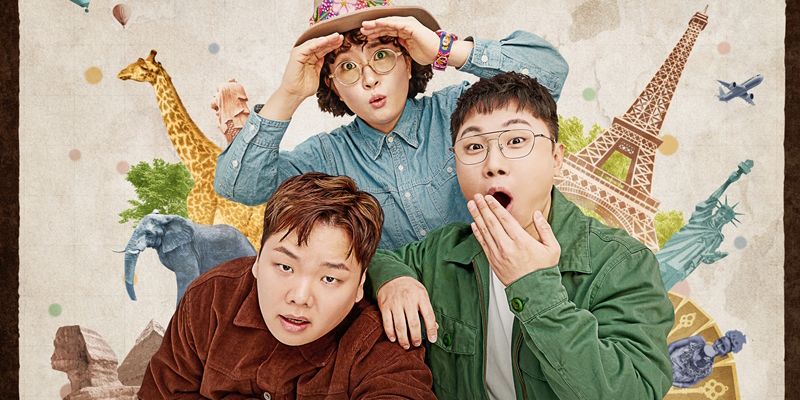

About Pani Bottle
대한민국의 여행 유튜버. 세계테마기행과 같이 기존에 존재했던 여행 다큐와는 다르게 오지탐험, 전쟁폐허 탐방 등, 직접 여행을 가서 본인이 몸소 느끼고, 역경에도 부딪히며 대중적으로 사람들이 알지 못했던 나라의 비화나 또 다른 이면을 있는 그대로 보여주고, 잘 알려진 관광지뿐만이 아니라 폐건물과 같은 특색 있는 장소도 방문하는 등 획기적인 형태를 가진 여행 유튜버의 분위기와 스펙트럼을 만들어낸 여행 유튜버계의 개척자[17]이다. 곽튜브의 탄생과 성공에도 일조했다.
2015년 3월 24일부터 여행 관련 영상 업로드를 시작했으며 2019년 1월 12일부터 2020년 3월 20일까지 유라시아 대륙 여행을 가지며 세계 여행을 테마로 활동 하다가, 코로나19의 영향으로 휴식기를 가진 후 2020년 7월 26일부터 국내 여행으로 여행의 저변을 넓혔으며, 웹드라마 좋좋소, 찐따록: 인간 곽준빈의 연출, 극본을 맡아 PD로 활동하기도 한다.
편집, 연출에 일가견이 있어 웹드라마의 성공과 1인칭 시점의 다큐와 유튜브식 자막을 섞은 특유의 영상편집 방식이 아예 대한민국 여행 유튜버들의 공식처럼 자리 잡았다.
2021년 8월 5일 아메리카 여행을 시작하였다. 인도 기차 여행 영상이 유튜브 알고리즘의 선택을 받은 후로부터 구독자 수가 급속히 증가하여, 2021년 10월 21일, 구독자 100만 명을 달성하여 현재 대한민국 여행 유튜버 구독자 수 1위이며 대한민국 여행 유튜버 최초 구독자 수 100만 타이틀을 갖고 있는 유명 유튜버이다.[18] 2024년 1월 3일 구독자 수 200만 명을 달성하였다.
빠니와 친구들
Pani's Characteristics
- 어린아이같다
- 여행을 좋아한다
- 여행을 다닐 때 멋지다
Pani's Friends
곽튜브, 원지의 하루